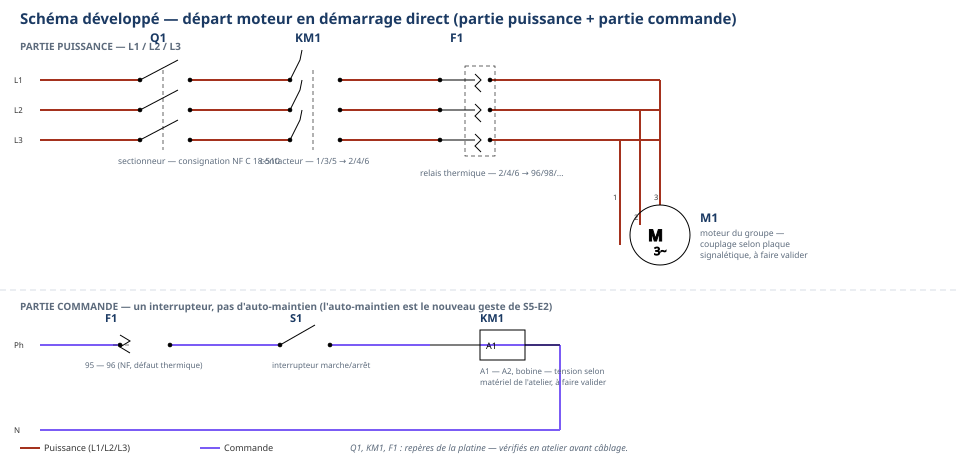

SalleSalle de théorie + postes de reprise (brasage fort, étanchéité, câblage)
Durée2 h — classe entière, groupes de besoin tournants
ModalitéLecture des grilles individuelle → 2 rotations de groupes de besoin → retour collectif → plan de progrès
Encadrement1 professeur, classe entière, appui des tuteurs pairs
Tâche
T12 Respecter les consignes de sécurité et protéger la zone de travail seule tâche mobilisée — aucune tâche nouvelle
Savoirs réactivés
S6.2 Principaux risques et moyens de prévention · S5.5 Réseaux fluidiques et mécanique des fluides · S5.6 Réseaux, matériels électriques et de régulation déjà vus S5-S6, aucun contenu nouveau
Savoir-être
Honnêteté de l'auto-positionnement · entraide sans se moquer (tutorat par les pairs) · accepter un point faible sans se décourager
Compétences (≤ 4) — statut
Confortement — FORMATIF, non remontéC3.4 · C3.9 · C3.6 — grille indicative de sortie de séance, aucun résultat remonté sur École Directe
Statut — à ne jamais confondre Les 3 compétences restent en
Confortement aujourd'hui, jamais en Évaluation. Rien de ce module n'est remonté sur École Directe.
La seule évaluation officielle sur ces compétences reste É3 (semaine 21, déjà passée) — S7-T0 la prolonge,
ne la refait pas. La grille 0-4 utilisée ici (feuille « ma grille É3 » et fiches de reprise) est un repère
d'auto-positionnement de sortie de séance, pas un nouveau relevé officiel.
Ce que ce document ajoute au document élève
Ce document reprend la même structure que le document élève (fiche « ma grille É3 »,
3 postes de reprise, fiche tuteur + défi transfert, trace écrite) et y ajoute : le tableau à remplir par le
professeur avec les vrais résultats d'É3 (aucun résultat fictif, aucun prénom), le déroulé minuté 120 min
exact, les critères de sortie de remédiation par poste, l'articulation avec les crochets prévus
dans S7-F1/S7-E1 (semaines 22-23), les conseils de posture pour cadrer les tuteurs, et les points de
vigilance propres à un module qui touche directement à l'estime de soi des élèves. Aucune notion
nouvelle : toutes les fiches de reprise dérivent des documents S5-F1, S6-F1/F2 et S6-E1, déjà produits et
vécus par les élèves — c'est une reprise, pas une nouvelle création d'exercice. C'est le même dispositif
que S5-T0 (retour d'É2), transposé à É3 : mécanique rodée depuis S3-T2, seuls les postes et les supports
changent — et le poste ÉTANCHÉITÉ ajoute une nuance de sécurité propre à É3 : l'élève en remédiation ne
manipule pas la bouteille d'azote.
🔴 TABLEAU À REMPLIR PAR LE PROFESSEUR — avec les vrais résultats
d'É3 de la classe. Aucun résultat fictif, aucun prénom dans ce document : utilisez vos propres codes
élèves (numéro de liste, initiales anonymisées selon votre pratique habituelle). Ce tableau ne doit jamais être
affiché ni partagé avec la classe — il reste un outil de préparation, à usage professeur seul.
Logique de répartition : chaque élève positionné 1 ou 2 sur une compétence
passe par le poste correspondant lors d'une des 2 rotations. Un élève faible sur 2 compétences passe par
2 postes (un par rotation). Un élève positionné 3-4 partout devient tuteur sur un poste, ou reçoit le
défi transfert « et le coffret clim qui arrive ? » (approfondissement) — voir feuille 4.
Code élève
C3.4
C3.9
C3.6
Rotation 1 (poste / rôle)
Rotation 2 (poste / rôle)
Remarque
Colonnes « Rotation » : notez le poste
(BRASAGE FORT / ÉTANCHÉITÉ / CÂBLAGE) et le rôle (REPRISE si positionné 1-2, TUTEUR si positionné 3-4 sur ce
poste, ou DÉFI TRANSFERT si l'approfondissement est retenu à la place du tutorat).
Effectifs par poste — repère de calcul
Avant la séance, comptez rapidement combien d'élèves sont positionnés 1-2 sur
chaque compétence : c'est ce nombre (plus les tuteurs affectés) qui détermine le nombre de postes physiques
à préparer pour BRASAGE FORT, ÉTANCHÉITÉ et CÂBLAGE. Si une compétence concentre beaucoup plus d'élèves en
difficulté que les deux autres, dédoublez ce poste (deux tables BRASAGE FORT, par exemple) plutôt que de créer
un groupe trop grand pour un seul professeur à superviser sur un geste de sécurité (chalumeau, tension).
Déroulé minuté — module 2 h (recompté ligne à ligne)
Durée
Phase
Contenu
Module théorie remédiation — 2 h 00 (pas de préparation de chantier atelier classique)
20 min
1. Lecture des grilles
3 min : accueil, rappel du cadre (« pas une nouvelle évaluation », feuille 1 du document élève). 12 min : distribution individuelle des grilles É3 corrigées ; chaque élève recopie ses positionnements réels sur la fiche « ma grille É3 » (feuille 2) et entoure ses cases 1-2. 5 min : le professeur passe entre les rangs pour vérifier les recopies et répondre aux questions individuelles, en silence, sans commentaire audible par le reste de la classe.
35 min
2. Rotation 1 — groupes de besoin
Installation aux 3 postes (BRASAGE FORT / ÉTANCHÉITÉ / CÂBLAGE) selon le tableau de répartition (feuille 2) — 3 min. 30 min : travail en petit groupe sur le poste assigné (fiches de reprise du document élève, feuilles 3-5) ; les tuteurs affectés à ce poste encadrent, le professeur supervise en priorité les gestes à risque (chalumeau, mise sous tension) et met lui-même le montage du poste ÉTANCHÉITÉ sous pression avant l'arrivée des élèves. 2 min : rotation vers le poste suivant pour les élèves concernés par 2 compétences.
35 min
3. Rotation 2 — groupes de besoin
32 min : même principe que la rotation 1, sur le second poste assigné (reprise d'une 2e compétence, tutorat sur un autre poste, ou défi transfert pour les élèves 3-4 partout — feuille 4). 3 min : rangement des 3 postes, retour aux places.
15 min
4. Retour collectif
10 min : mise en commun à l'oral, sans jamais citer de résultat individuel (« qu'avez-vous appris en reprenant votre geste ? », « qu'est-ce qui a été utile dans le tutorat ? »). 5 min : rappel du lien avec la suite de S7 (crochets dans S7-F1/S7-E1, semaines 22-23 — voir feuille 5) et annonce du changement d'échelle (pose des manomètres, tirage au vide).
15 min
5. Plan de progrès
12 min : rédaction individuelle des 2 objectifs de progrès (trace écrite, feuille 7 du document élève). 3 min : consigne de recopie dans le carnet F3, rubrique « Après É3 », et clôture de séance.
Total : 20 + 35 + 35 + 15 + 15 = 120 min exactes, conforme au
découpage proposé par le cadrage S7 pour le module S7-T0 (identique à la trame S5-T0).
Point de vigilance — supervision des 3 postes en simultané Le poste
BRASAGE FORT (chalumeau HP) et le poste CÂBLAGE (électricité) sont deux postes à risque qui fonctionnent en
même temps : le professeur ne peut pas être aux deux à la fois. Le poste ÉTANCHÉITÉ demande, lui, une
intervention professeur en amont de la rotation (mise sous pression du montage) puis peut fonctionner
en autonomie relative pendant le contrôle à l'eau savonneuse, sans manipulation de bouteille par les élèves.
Les tuteurs pairs assurent l'encadrement de premier niveau (méthode, relecture de consigne), mais tout
contrôle de sécurité — mise sous tension, allumage du chalumeau, mise sous pression, validation finale d'un
cordon de brasage — reste exclusivement professeur, comme dans tous les modules S1→S6. Si l'effectif ou
la configuration de la salle ne permet pas cette supervision simultanée, réduire à 2 postes actifs par rotation
plutôt que 3, quitte à allonger légèrement le nombre de rotations sur les semaines suivantes.
Critères de sortie de remédiation (observables, par poste)
Poste
Critère de sortie — l'élève quitte la reprise quand…
BRASAGE FORT (C3.4)
… l'assemblage réalisé est conforme, le décapage a été montré au professeur avant toute chauffe, la chauffe a atteint la coloration rouge sombre sans percement ni surchauffe, le métal d'apport a été aspiré par capillarité, et le cordon brasé est continu, brillant, sans manque, sans surchauffe, sur une pièce réalisée seul(e) — critère identique à celui d'É3 (poste FROID, partie A).
ÉTANCHÉITÉ (C3.9)
… le contrôle à l'eau savonneuse a été conduit méthodiquement sur tous les raccords du montage déjà sous pression, le verdict est noté honnêtement, et l'élève a repéré tous les manques du PV incomplet fourni, avec une explication correcte de la valeur de preuve d'un PV. L'élève n'a, à aucun moment, manipulé la bouteille ni le détendeur.
CÂBLAGE (C3.6)
… le câblage du départ moteur est conforme au schéma et aux couleurs, l'auto-maintien (KM1 13-14 en parallèle de S1) est câblé correctement et vérifié fonctionnel à l'essai, le contrôle hors tension est réalisé avant l'appel du professeur, câblé seul(e) à partir du schéma sans repères, sans démonstration préalable câblée.
Un élève qui ne franchit pas ce critère en
35 min n'est pas laissé de côté : le professeur note « à reprendre » dans le tableau de la feuille 2 et
s'appuie sur les crochets prévus dans S7-F1/S7-E1 (ci-dessous) pour poursuivre la reprise sans créer un nouveau
module dédié.

Poste CÂBLAGE — schéma complet légendé (référence professeur). Les élèves ne
travaillent, eux, que sur la version sans repères (document élève) : ce schéma sert uniquement au contrôle du
câblage réalisé, jamais affiché pendant l'exercice.
Articulation avec les crochets de S7-F1 et S7-E1 (semaines 22-23)
S7-T0 n'est que le premier étage du dispositif de remédiation post-É3 (cadrage
S7, §Remédiation post-É3). Les deux étages suivants prennent le relais dans les semaines qui suivent :
dans S7-F1 (pose des manomètres HP/BP, semaines 22-23), la phase 4 (vérification des
prérequis, exercice au fil de l'eau) réactive les gestes du poste froid d'É3 — brasage fort et
étanchéité sont présentés comme la base sur laquelle repose la pose des manomètres (un circuit qui
fuit ne se met pas en service) ; sa variante consolidation est fléchée « élèves positionnés 1-2 à É3
sur C3.4 ou C3.9 » — les élèves repérés aujourd'hui y retrouvent un accompagnement renforcé ;
dans S7-E1 (régulations simples, premier réglage, semaines 22-23), même logique pour C3.6, avec une
variante consolidation fléchée de la même façon avant le réglage guidé des organes de régulation ;
la variante approfondissement de ces deux modules mentionne le tutorat : les élèves devenus tuteurs
en S7-T0 peuvent poursuivre ce rôle sur les ateliers suivants, en cohérence avec la progressivité spiralaire
de la charte ;
le carnet F3 porte la rubrique « Après É3 » aux semaines 22 (aujourd'hui) et bilan semaine 25 : c'est
là que se referme la boucle, pas dans un nouveau module théorique ;
C3.6 (câblage) trouve un second relais dans S7-E2 (coffret clim et câblage, semaines 24-25) :
le départ moteur avec auto-maintien y est explicitement réinvesti dans un ensemble plus large — c'est le sens
même du défi transfert de la feuille 6 du document élève.
Conseils de posture pour cadrer les tuteurs
La fiche tuteur du document élève (feuille 6) donne aux élèves les règles du rôle.
Côté professeur, quelques repères pour que le tutorat reste sûr et utile :
Désignez le tuteur explicitement, poste par poste, à partir du tableau de la feuille 2 — ne laissez
pas les élèves s'auto-désigner, cela évite les dynamiques de groupe non voulues ;
briefez chaque tuteur en 1 minute avant la rotation : rappelez oralement les 3 interdits de sa
fiche (faire à la place, donner la réponse, se moquer) — un rappel court suffit, ils l'ont déjà lu ;
restez disponible pour retirer un tuteur de son rôle sans le sanctionner si le tutorat ne se passe
pas bien (impatience, moquerie) : proposez-lui alors le défi transfert plutôt qu'une sanction ;
le tutorat reste un rôle d'un jour, pas une étiquette : varier les tuteurs d'un module à l'autre de
la séquence, un même élève n'est pas systématiquement désigné ;
au poste ÉTANCHÉITÉ, même un tuteur 3-4 sur C3.9 ne manipule jamais la bouteille : ce geste reste
professeur seul, y compris pour la démonstration du tuteur.
⚠ Élève démotivé par un 1 Un élève qui découvre un niveau 1 sur une
compétence peut réagir par le découragement, le déni (« c'est faux ») ou le repli. Ne jamais laisser ce moment
sans accompagnement : reformuler immédiatement que 1 ne mesure pas la valeur de l'élève, mais l'état d'un
geste précis un jour donné (cf. feuille 2 du document élève, encadré « ce que je retiens »). Proposer un temps
individuel bref si le retrait dure au-delà de la phase 1.
⚠ Jamais de résultats affichés publiquement Le tableau de la feuille 2
(résultats réels par élève) reste un document professeur, jamais projeté, jamais affiché, jamais commenté à voix
haute devant la classe. La répartition en postes se communique individuellement ou par un signal neutre
(étiquette de poste distribuée en main propre), jamais par une liste publique de niveaux.
⚠ Ne pas transformer le tutorat en compétition Le professeur veille à ce
que le tutorat ne devienne pas un classement implicite (« les bons aident les mauvais »). Le vocabulaire employé
en phase 4 (retour collectif) reste centré sur le geste et la méthode, jamais sur un classement d'élèves.
⚠ Chalumeau au poste BRASAGE FORT — supervision renforcée Le poste
BRASAGE FORT remobilise une flamme plus intense que le brasage tendre de S3-S4. Appliquer strictement les
mêmes gestes interdits et la même procédure qu'en S5-F1 (jamais de flamme dirigée vers un pair, jamais de tube
brasé touché à main nue, chalumeau jamais posé allumé) : ce n'est pas parce que le geste est « déjà vu » que la
vigilance de sécurité peut baisser.
⚠ Poste ÉTANCHÉITÉ — le montage est déjà sous pression, jamais l'élève À
la différence du poste FROID B d'É3, l'élève en remédiation ne manipule ni la bouteille ni le détendeur :
le professeur met le montage sous pression avant l'arrivée des élèves au poste (voir feuille 3, phase 2)
et vérifie la ventilation de la zone. Ce choix n'est pas une facilité : il évite de cumuler une difficulté
identifiée (C3.9 en cours d'acquisition) avec un geste à risque supplémentaire, dans l'esprit de la charte
(la sécurité et les gestes à risque ne se découvrent pas, ils s'imposent).
Différenciation
Profil
Adaptation
Consolidation (déjà 1-2 sur plusieurs compétences)
Limiter à une seule reprise approfondie plutôt que 2 rotations superficielles si le professeur juge qu'un geste nécessite tout le temps disponible ; l'autre compétence est alors reportée en priorité sur les crochets S7-F1/S7-E1 ou sur S7-E2 pour C3.6.
Standard
Déroulement tel que décrit : lecture individuelle, 2 rotations, retour collectif, plan de progrès.
Approfondissement (3-4 partout)
Défi transfert au lieu du tutorat pur : réponse écrite à « et le coffret clim qui arrive ? » (feuille 6 du document élève) — exercice de projection et de formalisation, Bloom 2-3.
FLE
Fiches de reprise du document élève déjà pictogrammées côté sécurité (réutilisation des pictogrammes S1/S5/S6) ; consignes de chaque poste relues à voix haute par le professeur ou le tuteur avant le démarrage du chronomètre.
TDAH / DYS
Un seul poste à la fois affiché sur l'emploi du temps de l'élève (jamais les 3 en même temps) ; tableaux de relevé à cases pré-imprimées (poste ÉTANCHÉITÉ, poste CÂBLAGE) déjà conçus pour réduire la charge ; visa professeur systématique à chaque étape pour sécuriser le sentiment de progression.
Points ouverts (à faire valider par F. Henninot)
Dates réelles de la semaine 22 (calendrier 2026-27, avril 2027) — « à confirmer », comme dans tout le
cadrage S7.
S7-T0 est un ajout au tableau du maître, qui ne liste que S7-T1 en théorie : nomenclature
`Sn-T0` déjà utilisée pour S3-T2 et S5-T0, à valider au bon à tirer (cf. `_ETAT.md`).
Gabarit d'assemblage au poste BRASAGE FORT (nombre de pièces, cote) : « selon le poste et le professeur, à
faire valider » — aucune valeur chiffrée fixée par ce document, seuls la coloration (≈ 750 °C) et le seuil
> 450 °C sont repris, sourcés de S5-F1.
Pression du montage au poste ÉTANCHÉITÉ : « fixée par le professeur, selon la pratique de l'atelier », comme
en S6-F1 — aucune valeur affirmée dans ce document.
Contenu exact des manques introduits dans le PV volontairement incomplet du poste ÉTANCHÉITÉ : à composer
par le professeur avant chaque séance (un scénario différent d'une année sur l'autre est même souhaitable).
Nombre exact de postes physiques BRASAGE FORT/ÉTANCHÉITÉ/CÂBLAGE à préparer : dépend des vrais effectifs
d'É3, connus seulement du professeur au moment de remplir la feuille 2 — non calculable à l'avance dans ce
document générique.
D'après : évaluation É3 S5-S6
de la même progression, document professeur — corrigé et grille (F. Henninot, semaine 21), notamment sa section
« Remédiation d'É3 (positionnements 1 et 2) — début de S7 » qui esquisse ce dispositif ; T.P Assemblage par
brasure forte du tube cuivre + fiche procédure CCCA-BTP « Brasure forte » (F. Henninot, S5-F1) pour le poste
brasage fort ; documents S6-F1 (épreuve d'étanchéité à l'azote, montée par paliers, FDS - Azote.pdf) et S6-F2
(recherche de fuite, méthode « tableau de chasse », check-list PV) pour le poste étanchéité ; documents S6-E1
(départ moteur et commande complète, repères Q1/KM1/F1/S1/S2/M1, contacts auxiliaires 13-14 et 95-96,
auto-maintien, consignation NF C 18-510) pour le poste câblage ; cadrage `_CADRAGE-S7.md` (chef d'orchestre
usine FrigorX, 19/07/2026) ; forme du document : S5-T0 (retour d'É2 et remédiation ciblée, 18/07/2026), même
dispositif transposé à É3.